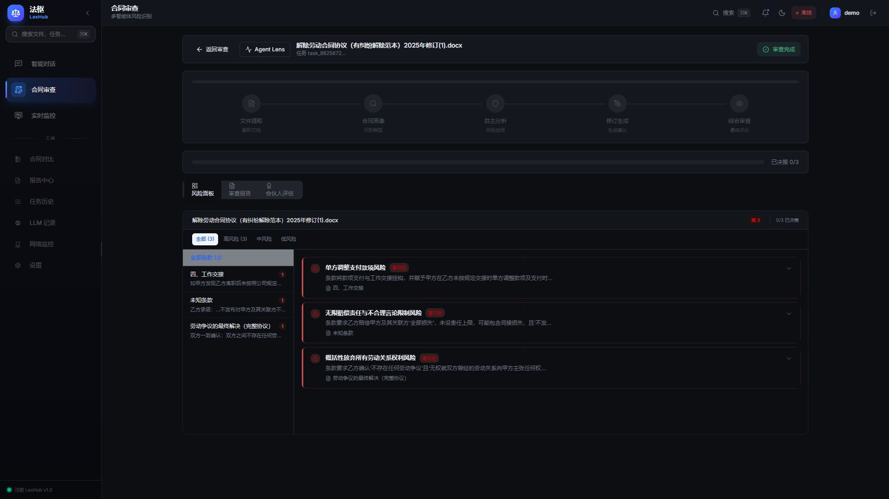
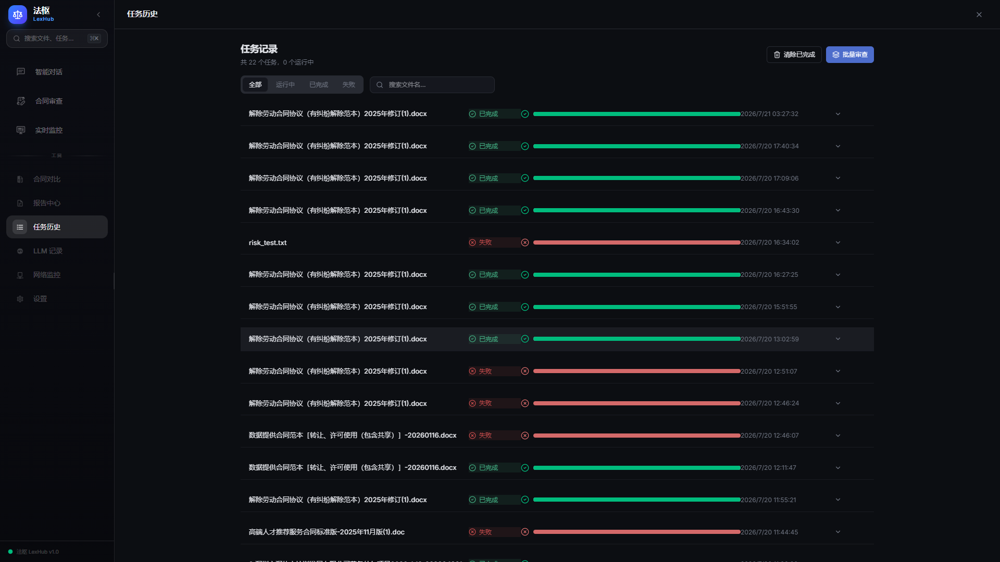
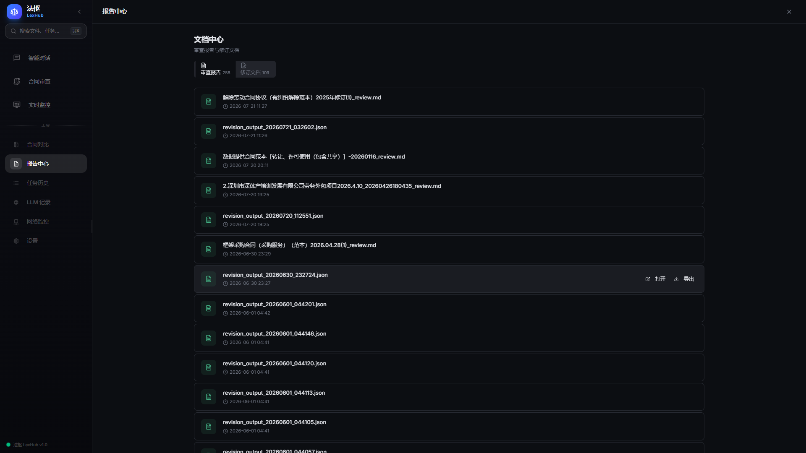

应用智能体 · 已部署运行
法枢 LexHub
5 个 AI Agent 分工审一份合同，出结构化审查报告与修订建议：条款提取 → 合同画像 → 风险分析 → 修订生成 → 质量审查，人只需要看最后的结构化报告并做专业判断。

背后的故事
律师与法务审一份合同，最耗时的不是「看懂」而是「看全」——条款要逐条提取、风险要逐类比对、改完还得回头复核改没改对，几十页的合同全靠人工过一遍，慢且容易漏。法枢 LexHub 把这件事拆给 5 个 Agent 流转，人只需要看最后的结构化报告并做专业判断。
0份审查报告
0份修订文档
0个审查 Agent
0种报告格式
平台实拍


项目时间线
v1.0.0
已部署运行
Docker 全栈上线，本地实例累计 258 份审查报告、109 份修订文档。
流水线
5 Agent 流转
extraction / reader / analysis / revision / review 各司其职，Review 与 Revision 双向协商。
质检
零 LLM 消耗
Supervisor 规则化质量评估与路由，单次审查成本可控。
我们学到了什么
- ▸生产环境和本地跑通是两件事
- ▸上线前一定要有监控和回滚方案
- ▸文档写给自己看的，也写给下一届看的